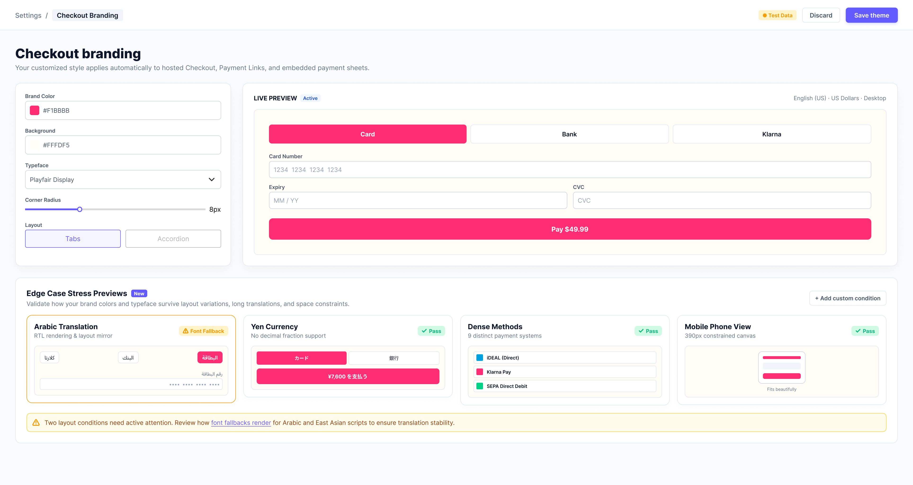
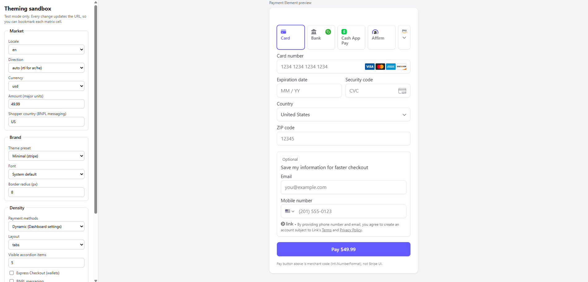
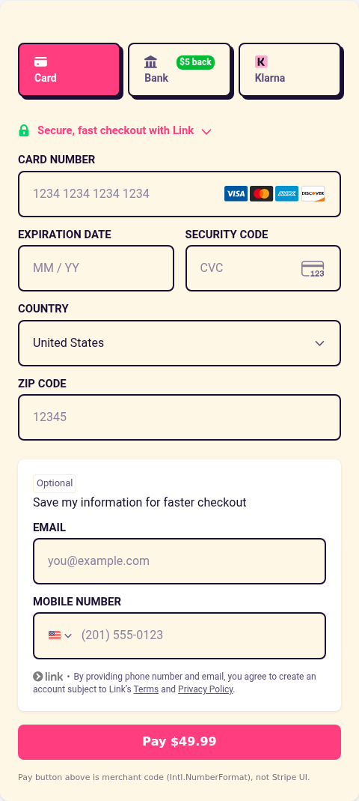
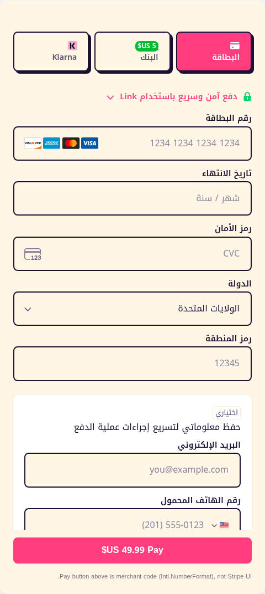
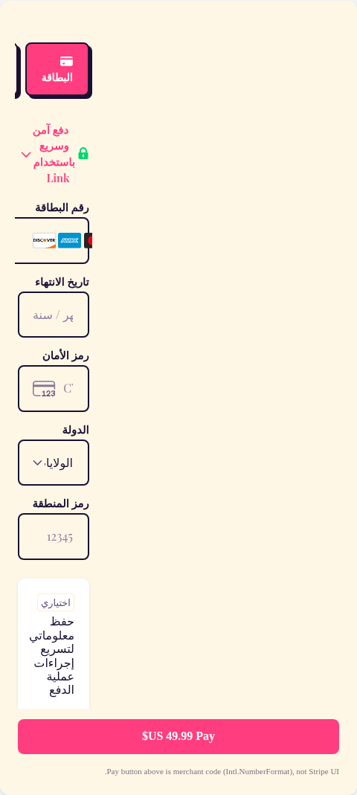
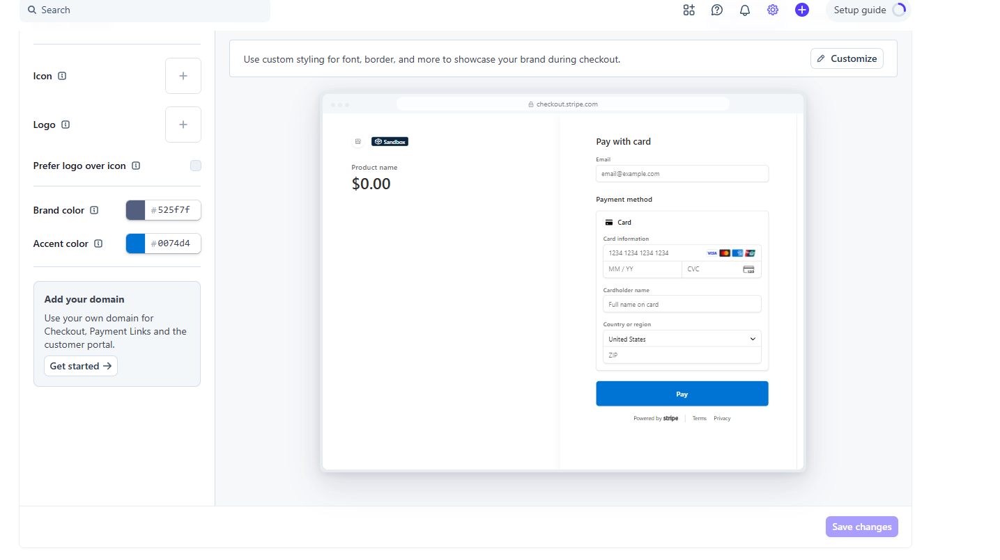
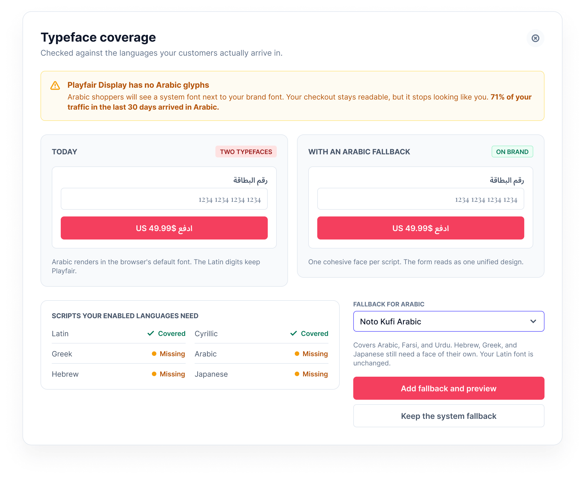
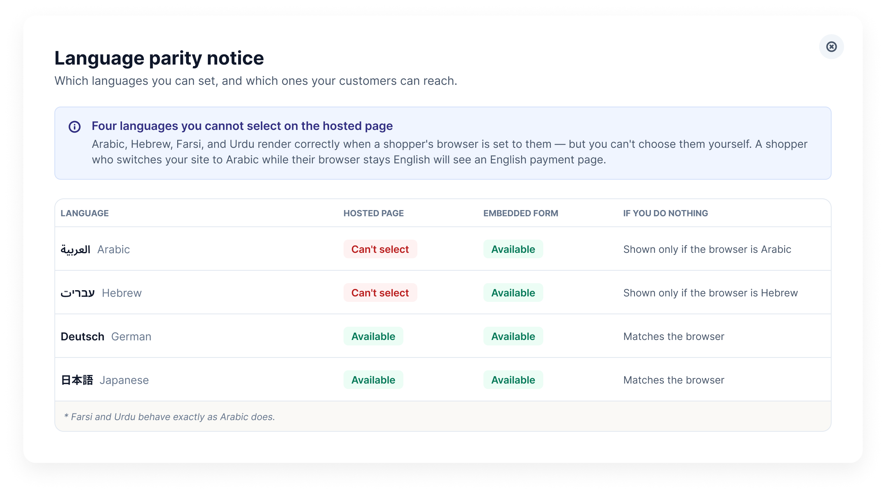

The checkout that never tells you what it changed
A self-initiated study of Stripe's checkout theming. The components held under every stress I could build. What didn't hold was the merchant's view of system. The system enforces limits in design, and does not notify the merchant.

Overview
When you buy something online, the checkout page is often not built by the shop. It is Stripe's, dropped into the shop's site. Stripe lets each shop adjust that page to match their brand, colours, a font, so the experience does not suddenly change at the payment step. Thousands of businesses do this, across dozens of languages and currencies, and none of them can preview it properly while they are styling it.
At a glance
- Role: Research, synthesis, user experience, prototyping
- Type: Self-initiated
- Duration: One week
The problem
Three people meet on this page and want different things. The shop's designer wants it to look like the rest of the shop. The shop's developer types those values in, ships, and moves on. The shopper only wants to pay, and notices the page when something looks off.
None of them can see what Stripe decided on their behalf. The designer will never see inside Stripe's code, and will almost never open the checkout in another language. So a shop can ship a payment page it has never really looked at.

Styling a Stripe checkout. The controls on the left are everything a shop gets to change. The form on the right is Stripe's.
How I tested it
I made up a shop with a loud brand, hot pink, heavy shadows, pill buttons, and pushed it through Stripe's own theming settings to see what survived. I built the test page in the picture above: Stripe's real payment form on one side, and on the other, a control for each thing a shop can change.
Constraints
- Colour and shape: Hot pink, heavy shadows, pill-shaped buttons.
- Font: Playfair Display, which has no Arabic letters in it at all.
- Language: English, German, Japanese, and Arabic. Arabic reads right to left, so the whole form has to flip.
- Currency: Five currencies. Yen has no equivalent of cents, and Kuwaiti dinar, has three digits after the point instead of two.
- Ways to pay: There are 9 different payment methods shown both on a desktop screen and on a phone.
Findings
Arabic flipped the entire layout correctly. Yen dropped its decimals. Nine ways to pay stacked up without collapsing in a desktop and a phone screen. The payment form had no issues.

Shop's brand in English

Same brand in Arabic. Labels, boxes, tabs and icons have flipped to read right to left.

The one exception. The shop's font has no Arabic letters, so Stripe quietly borrows another one.
In the third image, the shop chose Playfair Display. It contains no Arabic letters at all. Rather than showing an Arabic shopper a row of empty boxes, Stripe silently reaches for whatever Arabic font the shopper's device happens to have.
That is the right call, and it is why the page still works. But look at what it leaves: the Arabic words are in a borrowed font, while the numbers, the word "Pay" and the word "Link" are still in the shop's Playfair. One form, two fonts, and the shop picked only one of them. To an Arabic shopper the payment page simply looks unlike the shop they were just browsing, and the shop has no way of knowing, because nothing in Stripe ever mentions that the swap happened.
What a shop is never told
Stripe makes decisions for the shop all the time. It ignores a colour it cannot read, refuses a style, borrows a font, picks a language.
1. Brand colours
A brand colour normally lives in one place, and everything on a site points at it so if it is changed once the whole site follows. Stripe does not point at it. The colour has to be typed into the checkout manually, as #FF3D7F, so it now exists in two places, and the second one is the one people forget to update.
Stripe is also particular about the form it comes in. Solid colours are fine. But it refuses to accept rgba() so a brand built on soft overlays disappears at the payment step.
Another problem is when Stripe cannot read the colour at all. Instead of notifying the developer, it throws the value away, keeps its own brand, and leaves a single line of complaint in a window only developers open. So, if the checkout is not tested in production, it will run without using the shop's brand.
2. Style limits
Stripe names the parts of the checkout a shop may change, the input boxes, the labels, the payment tabs, and for each one accepts a short list of changes: colour, spacing, border, corner radius. That list is the entire freedom it offers.
Anything beside it is ignored. For instance, assume the design asks for a gradient behind the pay button, or for the email field to be placed above the card number. Both can be typed into the theme. The checkout loads without either of them, and it does not notify the developer anywhere as to why it was refused.
3. Language
A shopper in Dubai with an English phone taps Arabic on a shop's site. Everything turns Arabic until the payment step, which stays English.
Arabic is not missing from Stripe. If the shopper's browser is set to Arabic, the payment page would be correctly flipped and perfectly readable. The phone decides the language, and the shop is not allowed to overrule it. So a shop that has translated its entire site into Arabic still cannot ask for an Arabic payment page.
Stripe hosts accepts forty languages and refuses all four that read right to left, Arabic, Hebrew, Farsi and Urdu. So the checkout page in these four lannguages are always set to English.
Proposal
1. Stress preview
This is the page where a shop picks its colours today. It previews one situation: English, US dollars, card only, on a desktop.

Stripe's branding page as it is today. Two colour pickers, one preview, and no warning about anything.
My proposal is the same page, showing the shop's colours in the four situations nobody checks before launch: a language that reads right to left, a currency with no cents, a crowded list of payment methods, and a phone screen.
Three of the four situations pass, one carries a warning
2. Font warning
The shop's font, Playfair Display, has no Arabic letters in it. Stripe deals with that by quietly borrowing another font, which is why one of the screenshots further up has two fonts on the same form. This screen says so before it happens, shows both versions side by side, and offers a font that would fix it.
White writing on my test shop's pink button is hard to read. Showing shops accessibility would help the brand.

3. Language chart
If the page Stripe hosts cannot offer Arabic, a shop should be able to find an alternative.

UI Design Elements
Colour
635BFF
4B44CC
333333
7B7B7B
FAFAFA
Tools used
Figma for the screens
A test page on Stripe's practice mode
LaTeX for documentation
Outcome
Stripe's payment form survived everything I put it through. The gaps were all in what the shop gets notified on: a colour dropped, a style ignored, a font swapped, a language it cannot request. In each case the checkout loads but no one is informed.
Every one of those is a message Stripe could send while the shop is still choosing, which is what the three screens do.
The next step would be interviewing shops that have styled or adopted a Stripe checkout, and going through the problems they ran into: what they tried to change, what never made it to the live page, and how long it took anyone to notice.